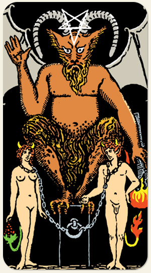

É a estrela que brilha para baixo, é o espiritual voltado para a matéria, é a descida aos nossos próprios porões, é nossa sombra levantando a mão e querendo ser ouvida e aceita, é a forma como lidamos com o que nos dá prazer: se repremimos ou extrapolamos. Fogo e cachos de uvas: o desejo pela abundância, tudo o que quer, quer em excesso.
Positivo: Conquistas materiais, lucro, prazeres terrenos, desejos saciados, magnetismo, amar nossos desejos, tornar o nosso melhor algo irresistível ao outro.
Negativo: Ser prejudicado pelos próprios desejos, engano, sexualidade desenfreada, vícios, aprisionamentos, acordos espirituais, trocas injustas, falta da capacidade de despertar o desejo no outro, ideia fixa, insatisfação.
Amor e Sexo: Tem a ver com tesão do que com amor, falta de desejo, parceiros que desemonstram poder, boa condição financeira, envolventes, controladores, manipuladores, vampirismo, pervertido, gostam de usar correntes, chicotes, podem fazer algo que deixe o outro desconfortável.
Trabalho e Dinheiro: Receber ajuda de outros, liderar, ter autoridade, autoritarismo na chefia. Ter a filosofia de que o dinheiro é o que move o mundo, recursos vindos de fontes obscuras, ilegais ou imorais, trabalhos noturnos, jogos de azar, políticos.
Espiritualidade: Seres trevosos, seres elementais (fauno), guardiões, feitiçaria, boca de praga, bruxaria, pessoas iniciadas em religiões ocultistas, com grande poder magnético, espíritos que alcançaram poderes magnéticos estando eles desencarnados ou não, magias de encantamento, rituais que envolvem sexo.
Símbolos: Diabo, Pentagrama Invertido, Chifres, Asas de Morcego, Tocha de Fogo, Banco de Pedra, Correntes, Cachos de Uva, Casal, Nudez.
Elementos: Espírito e Espírito.
Referências: Quimera, Fauno.